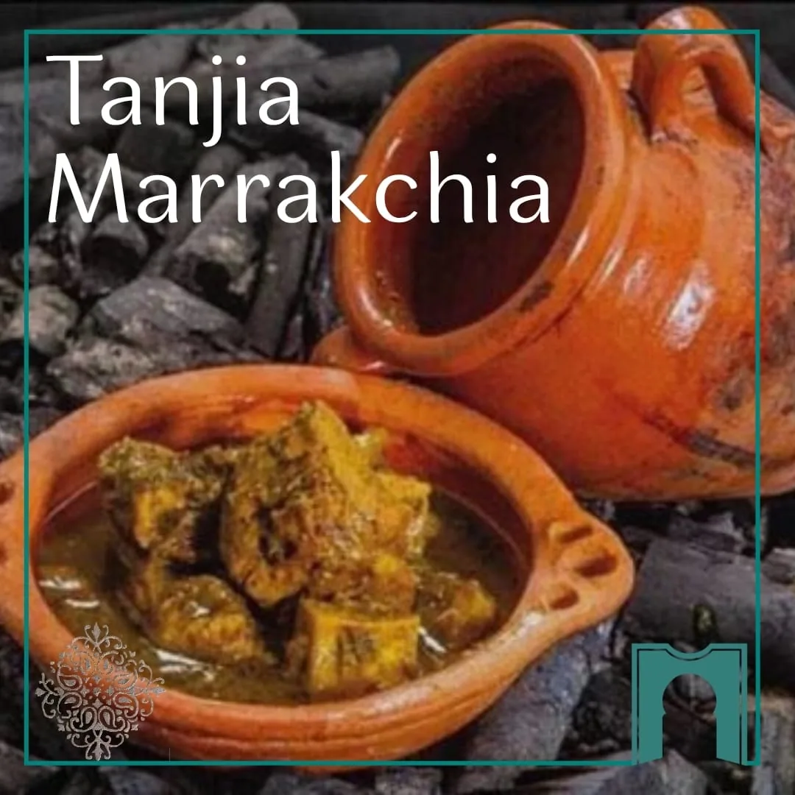
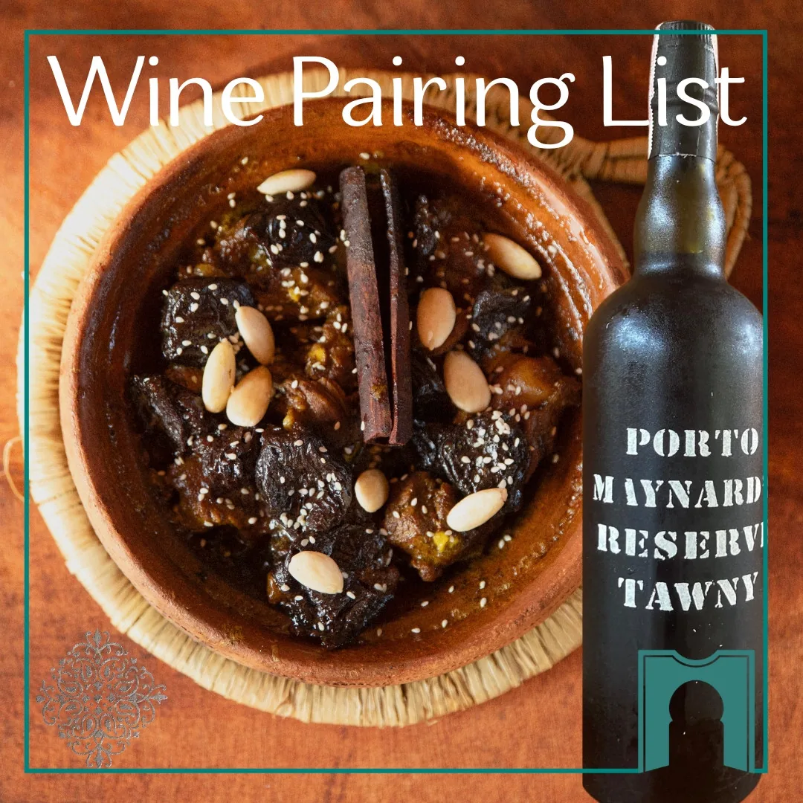

Tajines
Cuits au feu, mijotés des heures durant — le sucré rencontre le salé.
Hin Kong Road, Sri Thanu area
Koh Phangan, Thaïlande
Mar–Sam · 19h–22h30

Un joyau marocain caché près de Sri Thanu & Hin Kong. Tajines cuits au feu, tanjias mijotées et dîners aux chandelles au jardin — enracinés dans la tradition, cuisinés lentement avec soin.
Niché près de Sri Thanu et Hin Kong — à quelques minutes de The Alcove, du Orion Healing Center et des Bliss Villas — Dar Mansour est une expérience culinaire immersive et pleine d'âme, sur la côte ouest de Koh Phangan.
Puisée dans la sagesse des Dadas, notre cuisine mêle les influences berbères, andalouses, juives et sahariennes — là où le sucré rencontre le salé, où les légumes sont rôtis avec patience et soin. Chaque détail, des zelliges faits main aux tables éclairées à la bougie, invite à ralentir et à se sentir chez soi.
Lire notre histoire La Salle Centrale
La Salle Centrale
« Dar Mansour apporte l'âme de l'hospitalité marocaine contemporaine à Koh Phangan. »Slow food · Art · Culture · Lien humain
Chez Dar Mansour, l'expérience commence bien avant votre arrivée. Comme l'un des seuls restaurants de slow food marocain de Koh Phangan, chaque plat est préparé à la commande, au rythme de la cuisine traditionnelle. La réservation est vivement recommandée et nos plats signature sont disponibles en précommande — idéalement 5 heures à l'avance — car des plats comme la tanjia marrakchia et les tajines cuits au feu ont besoin de temps, d'amour et de patience pour révéler toute leur âme.
Réservation à l'avance via WhatsApp — pour une expérience intime et sur-mesure à chaque table.
Plats principaux précommandés, idéalement 5 heures à l'avance — pour honorer les longues cuissons et éviter toute attente à l'arrivée.
Pas de préparation en masse, pas de restes. Chaque plat est cuisiné frais, rien que pour vous, au rythme des ingrédients.
Limité à 40 convives par soir. La lenteur nourrit la profondeur, le soin et la qualité — pour la planète et pour la tradition.
Inspirée par les Dadas — gardiennes silencieuses des recettes familiales marocaines — notre cuisine célèbre l'essence authentique du Maroc : des plats mijotés, pleins de générosité, de profondeur et d'âme.
Cuits au feu, mijotés des heures durant — le sucré rencontre le salé.

Semoule roulée à la main, cuite quatre fois à la vapeur jusqu'à devenir légère et aérienne.

La spécialité marrakchie — cuite doucement et lentement dans sa jarre de terre.
Dar Mansour est la vision de Maïja — une âme créative qui a passé plus de 30 ans immergée dans la culture marocaine — et de Bruno, entrepreneur français tombé amoureux non seulement du Maroc, mais de sa plus inspirée des ambassadrices.
Ensemble, ils ont imaginé un lieu où chaque repas est une histoire, chaque invité accueilli comme un proche, et chaque détail — des épices à la musique — porte l'âme de l'hospitalité marocaine.
Rencontrer les fondateurs Direction Artistique · Maïja
Direction Artistique · Maïja

Certaines soirées méritent plus qu'un restaurant. Anniversaires, fêtes, demandes en mariage, lunes de miel ou réunions intimes — orchestrés avec soin dans notre paisible jardin aux chandelles, entre Sri Thanu et Hin Kong.
Organiser votre célébration
Accords Mets & VinsIci, le vin est plus qu'une boisson — c'est un dialogue avec le plat. Nous sommes fiers de proposer la seule carte d'accords mets & vins marocains de Koh Phangan, chaque cuvée choisie pour sublimer la chaleur et la profondeur aromatique de notre slow food.
Au Mansour Bar, les cocktails sont une histoire, un parfum, une étincelle de mémoire — du Rock the Casbah au sirop de Ras El Hanout à la célèbre Mansour's Jasminade.
Explorer vins & cocktails« Étant à moitié marocain… je mangeais et je pleurais, je pleurais et je mangeais. On sent l'amour dans chaque bouchée. »
« Nous avons dîné assis au sol, entourés de tapis et de lanternes — comme dans un riad marocain. Une soirée familiale magique. »
« Une cuisine marocaine profondément authentique qui m'a bouleversée. Chaleureux, élégant et plein de charme. »
« Maija et Bruno nous ont accueillis comme de vieux amis. Msemen en entrée, tajines mijotés — tout était parfait. »
« On se serait cru transporté dans un riad secret de Marrakech. Un joyau caché au cœur battant. »
« Marocaine vivant à Koh Phangan, je me suis sentie chez moi instantanément. Plus qu'un repas — une expérience. »
Cité dans le magazine Golf du Maroc parmi les plus belles destinations culinaires marocaines au monde — deux mois seulement après l'ouverture. Un joyau culinaire qui porte l'âme marocaine à travers les continents.
La réservation est vivement recommandée, les plats principaux étant précommandés via WhatsApp — idéalement 5 heures avant votre venue. Signalez-nous toute allergie ou besoin alimentaire — nous ferons de notre mieux pour nous adapter tout en restant fidèles à nos recettes.


{kind=link}